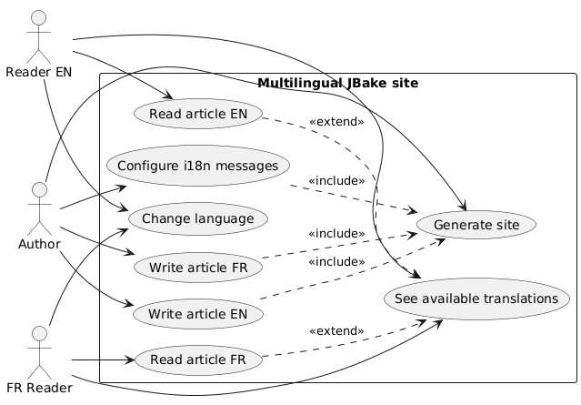
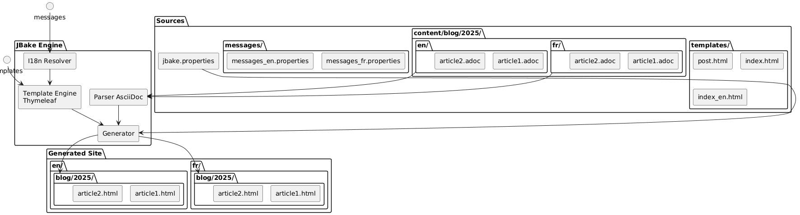
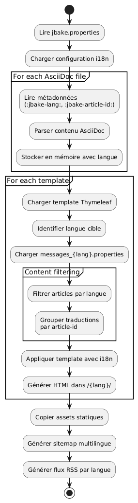

Internationalizing a static JBake site with Thymeleaf
Published on 20 October 2025
Introduction
The internationalization (i18n) of a static site may seem complex at first glance, but JBake combined with Thymeleaf offers elegant solutions for creating a multilingual site. In this article, I will show you how I set up i18n on my blog, covering both templating and article management in multiple languages.
Use case diagram (Use Case)

Internationalization architecture
Our approach is based on two pillars:
-
The i18n of templating: use of Thymeleaf message files for interface elements
-
The i18n of the content: organization of articles by language in a dedicated folder structure
Structure diagram (File organization)

Why this approach?
This separation allows:
-
Maintain consistency in the interface regardless of the language
-
Manage content and article translations independently
-
Facilitate the addition of new languages without major refactoring
-
Allow articles available only in certain languages
Component diagram

I18n of templating with Thymeleaf
Structure of message files
The first step is to create the property files for each supported language:
src/jbake/templates/
├── messages.properties # Fallback par défaut
├── messages_fr.properties # Français
├── messages_en.properties # Anglais
└── messages_de.properties # AllemandContent of message files
Here is an example of a file`messages_fr.properties`:
# Navigation
nav.home=Accueil
nav.blog=Blog
nav.about=À propos
nav.contact=Contact
# Articles
article.readmore=Lire la suite
article.published=Publié le
article.tags=Étiquettes
article.also.available=Également disponible en
# Interface
site.title=Mon Blog Technique
site.description=Partage de connaissances et expériences
footer.copyright=© 2025 Tous droits réservés
search.placeholder=Rechercher un article...And its English equivalent`messages_en.properties` :
# Navigation
nav.home=Home
nav.blog=Blog
nav.about=About
nav.contact=Contact
# Articles
article.readmore=Read more
article.published=Published on
article.tags=Tags
article.also.available=Also available in
# Interface
site.title=My Tech Blog
site.description=Sharing knowledge and experiences
footer.copyright=© 2025 All rights reserved
search.placeholder=Search articles...Use in the templates
In your Thymeleaf templates, use the syntax`#{}`to access the messages :
<!DOCTYPE html>
<html xmlns:th="http://www.thymeleaf.org">
<head>
<title th:text="#{site.title}">Mon Blog</title>
<meta name="description" th:content="#{site.description}" />
</head>
<body>
<nav>
<a th:href="@{/}" th:text="#{nav.home}">Accueil</a>
<a th:href="@{/blog/}" th:text="#{nav.blog}">Blog</a>
<a th:href="@{/about.html}" th:text="#{nav.about}">À propos</a>
</nav>
<footer>
<p th:text="#{footer.copyright}">Copyright</p>
</footer>
</body>
</html>Sequence diagram - i18n resolution
Failed to generate image: PlantUML preprocessing failed: [From <input> (line 4) ]
@startuml
actor Auteur
participant JBake
participant "AsciiDoc
^^^^^
Syntax Error? (Assumed diagram type: sequence)
@startuml
actor Auteur
participant JBake
participant "AsciiDoc
Parser" as parser
participant "Thymeleaf\nEngine" as thymeleaf
participant "I18n\nResolver" as i18n
database "messages_*.properties" as messages
Auteur -> JBake: jbake -b
activate JBake
JBake -> parser: Lire article.fr.adoc
activate parser
parser --> JBake: Contenu + métadonnées\n(lang=fr, article-id=xyz)
deactivate parser
JBake -> parser: Lire article.en.adoc
activate parser
parser --> JBake: Contenu + métadonnées\n(lang=en, article-id=xyz)
deactivate parser
JBake -> thymeleaf: Générer page FR
activate thymeleaf
thymeleaf -> i18n: Résoudre #{nav.home}
activate i18n
i18n -> messages: Lire messages_fr.properties
messages --> i18n: "Welcome"
i18n --> thymeleaf: "Welcome"
deactivate i18n
thymeleaf -> JBake: Rechercher traductions\n(article-id=xyz, lang!=fr)
JBake --> thymeleaf: article.en.html trouvé
thymeleaf --> JBake: /fr/blog/article.html
deactivate thymeleaf
JBake -> thymeleaf: Générer page EN
activate thymeleaf
thymeleaf -> i18n: Résoudre #{nav.home}
activate i18n
i18n -> messages: Lire messages_en.properties
messages --> i18n: "Home"
i18n --> thymeleaf: "Home"
deactivate i18n
thymeleaf -> JBake: Rechercher traductions\n(article-id=xyz, lang!=en)
JBake --> thymeleaf: article.fr.html trouvé
thymeleaf --> JBake: /en/blog/article.html
deactivate thymeleaf
JBake --> Auteur: Site généré
deactivate JBake
@enduml
Setting the locale in JBake
In your file`jbake.properties`, set the default locale :
# Locale par défaut
thymeleaf.locale=fr
# Encodage
template.encoding=UTF-8I18n of articles: organization by folders
Flow diagram (Flow) - Generation

Folder structure
Rather than using suffixes in file names, I opted for a folder-based organization that offers more clarity and maintainability:
content/blog/
├── 2024/
│ ├── fr/
│ │ ├── introduction-jbake.adoc
│ │ ├── guide-thymeleaf.adoc
│ │ └── astuces-asciidoc.adoc
│ └── en/
│ ├── introduction-jbake.adoc
│ ├── thymeleaf-guide.adoc
│ └── asciidoc-tips.adoc
└── 2025/
├── fr/
│ └── internationalisation-jbake.adoc
└── en/
└── jbake-internationalization.adocBenefits of this approach
This structure presents several advantages:
-
Clear separation: each language has its own space
-
Flexible namingfiles can have different names depending on the language
-
Scalability: easy to add a new language
-
Natural organization: follows the temporal logic of JBake
Article metadata
Each article must contain metadata to allow linking between translations. Here is an example:
French version(2025/fr/internationalisation-jbake.adoc) :
= Internationalisation d'un site statique JBake
:jbake-type: post
:jbake-status: published
:jbake-date: 2025-10-20
:jbake-lang: fr
:jbake-article-id: jbake-i18n-thymeleaf
:jbake-tags: jbake, thymeleaf, i18n
:jbake-description: Guide pour mettre en place l'i18n avec JBakeEnglish version(2025/en/jbake-internationalization.adoc) :
= Internationalizing a JBake Static Site
:jbake-type: post
:jbake-status: published
:jbake-date: 2025-10-20
:jbake-lang: en
:jbake-article-id: jbake-i18n-thymeleaf
:jbake-tags: jbake, thymeleaf, i18n
:jbake-description: Guide to implement i18n with JBake| The attribute`:jbake-article-id:`is crucial: it allows linking the different translations of the same article. |
Configuration of the URLs
In`jbake.properties`, configure the URL pattern to include the language :
# Pattern d'URL avec langue
post.permalink.pattern=:lang/blog/:year/:name.html
# Langue par défaut
site.default.lang=frThis will generate URLs of the type:
-
/fr/blog/2025/internationalisation-jbake.html -
/en/blog/2025/jbake-internationalization.html
Templates for multilingual display
Article template with language selector
Create a template`post.html`that displays the available translations :
<!DOCTYPE html>
<html xmlns:th="http://www.thymeleaf.org">
<head>
<title th:text="${content.title}">Article</title>
</head>
<body>
<article>
<header>
<h1 th:text="${content.title}">Titre</h1>
<div class="article-meta">
<time th:text="${#dates.format(content.date, 'dd MMMM yyyy')}"
th:attr="datetime=${#dates.format(content.date, 'yyyy-MM-dd')}">
Date
</time>
<!-- Sélecteur de traductions -->
<div class="translations" th:if="${content['article-id']}">
<span th:text="#{article.also.available}">Aussi disponible en :</span>
<ul class="language-list">
<li th:each="post : ${published_posts}"
th:if="${post['article-id'] == content['article-id'] and post.lang != content.lang}">
<a th:href="${post.uri}"
th:text="${post.lang.toUpperCase()}">
LANG
</a>
</li>
</ul>
</div>
</div>
</header>
<div class="content" th:utext="${content.body}">
Contenu de l'article
</div>
<footer class="article-footer">
<div class="tags" th:if="${content.tags}">
<span th:text="#{article.tags}">Étiquettes :</span>
<span th:each="tag : ${content.tags}">
<a th:href="@{/tags/{tag}.html(tag=${tag})}"
th:text="${tag}">tag</a>
</span>
</div>
</footer>
</article>
</body>
</html>Index filtered by language
Create index templates for each language:
index.html(index French) :
<!DOCTYPE html>
<html xmlns:th="http://www.thymeleaf.org">
<head>
<title th:text="#{site.title}">Mon Blog</title>
</head>
<body>
<main>
<h1 th:text="#{nav.blog}">Blog</h1>
<div class="articles-list">
<article th:each="post : ${published_posts}"
th:if="${post.lang == 'fr'}">
<h2>
<a th:href="${post.uri}" th:text="${post.title}">Titre</a>
</h2>
<time th:text="${#dates.format(post.date, 'dd MMMM yyyy')}">
Date
</time>
<p th:text="${post.description}">Description</p>
<a th:href="${post.uri}" th:text="#{article.readmore}">
Lire la suite
</a>
</article>
</div>
</main>
</body>
</html>index_en.html(English index) :
<!DOCTYPE html>
<html xmlns:th="http://www.thymeleaf.org">
<head>
<title th:text="#{site.title}">My Blog</title>
</head>
<body>
<main>
<h1 th:text="#{nav.blog}">Blog</h1>
<div class="articles-list">
<article th:each="post : ${published_posts}"
th:if="${post.lang == 'en'}">
<h2>
<a th:href="${post.uri}" th:text="${post.title}">Title</a>
</h2>
<time th:text="${#dates.format(post.date, 'dd MMMM yyyy')}">
Date
</time>
<p th:text="${post.description}">Description</p>
<a th:href="${post.uri}" th:text="#{article.readmore}">
Read more
</a>
</article>
</div>
</main>
</body>
</html>Navigation between languages
Global language selector
Flow diagram - User reading

Add a language selector to your main template:
<nav class="language-switcher">
<a href="/index.html"
th:classappend="${content.lang == 'fr'} ? 'active'"
title="Français">
🇫🇷 FR
</a>
<a href="/en/index.html"
th:classappend="${content.lang == 'en'} ? 'active'"
title="English">
🇬🇧 EN
</a>
</nav>Style CSS for the selector
.language-switcher {
display: flex;
gap: 1rem;
padding: 0.5rem;
background: #f5f5f5;
border-radius: 4px;
}
.language-switcher a {
padding: 0.5rem 1rem;
text-decoration: none;
color: #333;
border-radius: 4px;
transition: background 0.2s;
}
.language-switcher a:hover {
background: #e0e0e0;
}
.language-switcher a.active {
background: #007bff;
color: white;
}
.translations {
margin: 1rem 0;
padding: 1rem;
background: #f8f9fa;
border-left: 4px solid #007bff;
}
.language-list {
display: inline-flex;
gap: 0.5rem;
list-style: none;
padding: 0;
margin: 0;
}
.language-list li::after {
content: "•";
margin-left: 0.5rem;
}
.language-list li:last-child::after {
content: "";
}RSS feed by language
To have RSS feeds separated by language, create distinct templates:
feed.xml(French flux) :
<?xml version="1.0" encoding="UTF-8"?>
<rss version="2.0" xmlns:th="http://www.thymeleaf.org">
<channel>
<title th:text="#{site.title}">Mon Blog</title>
<link th:text="${config.site_host}">http://example.com</link>
<description th:text="#{site.description}">Description</description>
<language>fr</language>
<item th:each="post : ${published_posts}"
th:if="${post.lang == 'fr'}">
<title th:text="${post.title}">Titre</title>
<link th:text="${config.site_host + post.uri}">Lien</link>
<pubDate th:text="${#dates.format(post.date, 'EEE, dd MMM yyyy HH:mm:ss Z')}">
Date
</pubDate>
<description th:text="${post.description}">Description</description>
</item>
</channel>
</rss>Best practices and tips
1. Consistency of article IDs
Make sure that`:jbake-article-id:`is identical for all translations of the same article. Use a consistent format:
-
Prefer English identifiers for universality
-
Use hyphens to separate words
-
Avoid special characters
2. Consistent dates
All translations of an article must have the same publication date.:jbake-date:) This facilitates sorting and chronological display.
3. Multilingual tags
For the tags, you have two options :
Option 1: Universal tags in English
:jbake-tags: java, spring-boot, microservicesOption 2: Tags translated with mapping
# Version française
:jbake-tags: java, spring-boot, microservices
# Version anglaise
:jbake-tags: java, spring-boot, microservices4. Management of untranslated articles
It is not mandatory to translate all articles. If an article exists only in one language, it will simply not appear in the listings of the other language.
5. Multilingual sitemap
Generate a sitemap that includes all languages:
<?xml version="1.0" encoding="UTF-8"?>
<urlset xmlns="http://www.sitemaps.org/schemas/sitemap/0.9"
xmlns:xhtml="http://www.w3.org/1999/xhtml"
xmlns:th="http://www.thymeleaf.org">
<url th:each="post : ${published_posts}">
<loc th:text="${config.site_host + post.uri}">URL</loc>
<lastmod th:text="${#dates.format(post.date, 'yyyy-MM-dd')}">Date</lastmod>
<!-- Liens alternatifs pour les traductions -->
<xhtml:link th:each="translation : ${published_posts}"
th:if="${translation['article-id'] == post['article-id'] and translation.lang != post.lang}"
rel="alternate"
th:attr="hreflang=${translation.lang},href=${config.site_host + translation.uri}" />
</url>
</urlset>Conclusion
Internationalizing a JBake site with Thymeleaf is a robust and maintainable approach. By separating i18n from templating (via message files) and i18n from content (via folder organization), you obtain a flexible system that can easily evolve.
The key points to remember:
-
Thymeleaf message filesfor the user interface
-
Organization by folders(year/language) for the articles
-
Article identifiersto link the translations
-
Dedicated templatesfor each language
-
Explicit URLsincluding the language code
Deployment diagram
Failed to generate image: PlantUML preprocessing failed: [From <input> (line 14) ]
@startuml
node "Development machine" {
artifact "sources" {
folder "(empty)"
folder "templates/"
folder "assets/"
}
component "JBake CLI" as jbake
Sources --> jbake : jbake -b
}
node "Build server
^^^^^
Syntax Error? (Assumed diagram type: component)
@startuml
node "Development machine" {
artifact "sources" {
folder "(empty)"
folder "templates/"
folder "assets/"
}
component "JBake CLI" as jbake
Sources --> jbake : jbake -b
}
node "Build server
(CI/CD)" {
component "GitHub Actions
or GitLab CI" as ci
jbake --> ci : push
}
cloud "CDN / Hosting" {
node "Static Web Server" {
artifact "Generated Site" {
folder "/en/blog/"
folder "/en/blog/"
folder "/assets/"
}
}
}
ci --> "Generated Site" : déploiement
actor "Readers" as users
users --> "Static Web Server" : HTTPS
@enduml
This architecture lets you start simply with two languages and add more without major refactoring. Everything remains fully static and performant, faithful to JBake’s philosophy.
Good multilingual development! 🌍